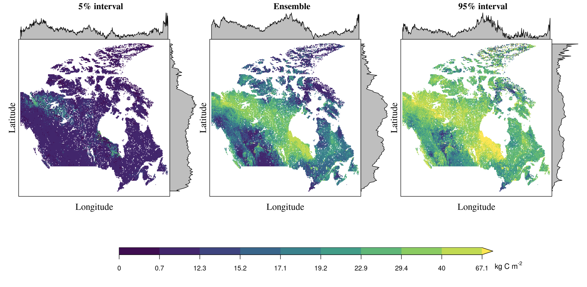
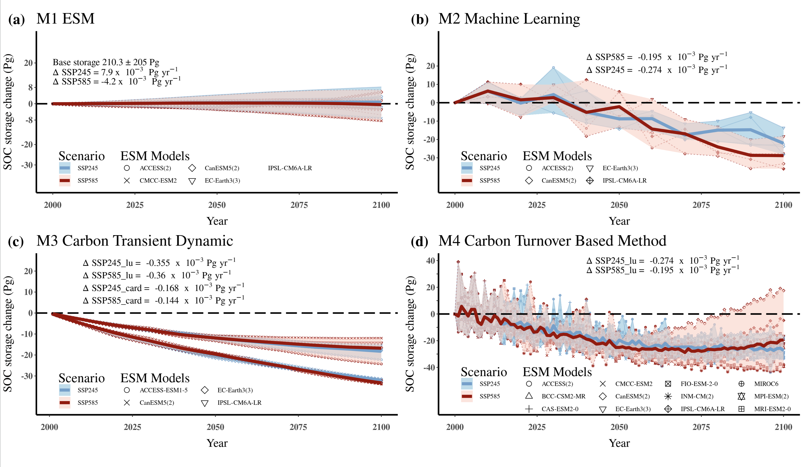

Main results

Fig.1 Base mapping of SOC in Canada

Fig. 2 Temporal trend of SOC with two scenarios in four different methods
Using multiple methods which come from different disciplines create a robust way to estimate SOC trend in response to climate change in Canada. In the future
Highlight:
- using method from He to get C input to soil from vegetation
- based on emergent constrain to get GPP in the future to calibrate data from CMIP
- using ensemble machine learning to predict SOC, and splite into 10 cm interval for trainning, improve accuracy. set Peat map into categories to capture the peat extend.
- using C input and C output balance to simulate C transient dynamic
- build relationship of turnover to climate variables (M4)
- set different experiment to detect main driving factor to SOC